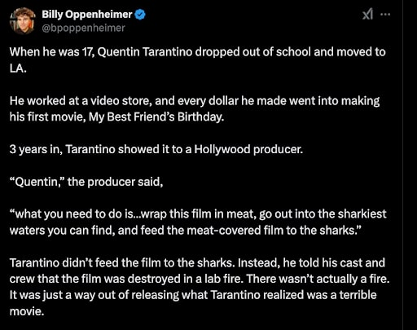

Navigating Tough Times to Achieve Your Future Goals!
We’ve all faced tough times. Many factors contribute, both external (war, economic instability, environmental disasters) and internal (mental, emotional and physical health challenges). Challenging times make it hard to succeed, and experiencing failure only exacerbates the problem. Resulting negative emotions may lead to procrastination resulting in drops in productivity which only contributes to future stress. [1] Difficult times, failure and resulting negative emotions may cause us to fall behind in achieving success in our professional or personal goals.
Some of us may bounce back fairly quickly, but others, not so much. This post is for the latter: people who struggle to achieve their goals, especially when navigating difficult times.
“Positive Override It”
Billy Oppenheimer speaks of legendary filmmaker and director, Quentin Tarantino’s experience with disappointment:
Tarantino goes on to say “I was under the impression that we were making this really amazing thing”, “It was my dream project…And it ended up being nothing. Absolutely nothing!” After brooding for a few weeks Tarantino rewatched his film, noticing the final scenes showed noticeable improvements.
When speaking of his previous failures, Tarantino mentions realizing he could “positive override” his initial reactions. Resulting in two things:
- Tarantino could transform feelings of disappointment into a positive outlook, allowing him to recognize areas in which he had made progress.
- Tarantino learned how to view failures as learning opportunities—in this case, how not to make a movie. [2]
Learning from his failure, Tarantino would go on to produce record breaking films, including the widely acclaimed, Pulp Fiction and Reservoir Dogs. Over the course of his career, receiving 171 wins and 284 nominations at various movie awards across the globe, Tarantino is now renowned as one of the greatest directors and screenwriters of modern time.
Psychologist, Dr. John Gottman, coined the term, “Positive Sentiment Override”, describing couples’ reactions to their partners when experiencing adversity. From his study:
Applied to oneself, “positive [sentiment] overriding” one’s reactions can help especially in navigating difficult times. Negative emotions may result in feeling as if all hope is lost and may make it difficult to continue working towards our goals.
“Positive overriding” our initial reactions can help us recognize our strengths and identify the next step towards achieving our goals.
Recognizing negative reactions is the first step to “positive sentiment override”. “A negative headspace is more than just a bad mood; you might feel like a failure, consumed with thoughts about how things didn’t go your way or with stress about your future.” The result is often negative self-talk and low self-esteem, leading us to feel frustrated and unhappy. [5]
When experiencing negative emotions from difficult situations, it may help to ask the following questions:
- What strengths did I display?
- What was I proud of?
- What did I learn not to do for the next time?
- How could I do it differently?
Not shying away in difficult times and continuing to make progress, while highlighting our efforts, combats negative emotions, and inspires us to believe in ourselves. Eventually, successfully navigating troubling times, then becomes a question of patience and consistency.
As we trust ourselves more, seeing that we’re able to turn adverse situations into opportunities for success, we’ll end up procrastinating less, as we become more excited (and less scared) for what the future has in store.
“Positive sentiment override” can help us make steady improvements to achieving our goals. Not by being overly optimistic, but by facing difficult situations with an opportunistic and positive mindset. Rather than continuing to be hard on yourself for failing, experience the feelings of disappointment and challenge yourself to notice the strengths you currently possess.
“Positive override” your initial reactions while navigating tough times, to efficiently and effectively move towards your goals.